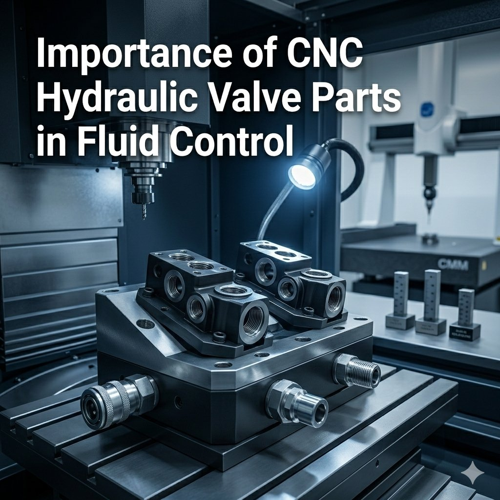

Hydraulic systems transmit power through pressurized fluid that travels through pipes and channels, with valves regulating how that fluid moves throughout the machinery. The internal structure of each hydraulic valve contains several small yet extremely precise components — spools, sleeves, housings, and connectors — that must align perfectly to control hydraulic fluid movement. These internal components are produced using computer numerical control machining technology and are commonly referred to as CNC hydraulic valve parts. Without precision machining, hydraulic systems experience leakage, inconsistent pressure, and mechanical failure — making the dimensional accuracy of every CNC hydraulic valve part a critical factor in maintaining reliable, safe, and efficient fluid control across industrial applications.
The movement of these components within the valve body must be extremely precise: even minor misalignment affects fluid direction, pressure stability, and the ability of machinery to perform tasks such as lifting heavy loads, controlling industrial presses, and powering construction equipment.
CNC machines follow programmed instructions that guide cutting tools with remarkable accuracy, maintaining extremely tight dimensional tolerances throughout production. This precision ensures components fit together perfectly within valve assemblies — reducing friction, preventing fluid leakage, and maintaining stable pressure during continuous operation. Industrial equipment also requires thousands of identical components, and CNC machining delivers consistent quality across every part produced. Material selection is equally critical: stainless steel, alloy steel, and brass provide the strength, wear resistance, corrosion protection, and dimensional stability required in high-pressure hydraulic environments — with hardened materials used where wear resistance is particularly demanding.
Construction machinery — excavators, loaders, cranes — relies on hydraulic systems for lifting and moving heavy materials, with precise valve operation determining how accurately hydraulic cylinders respond. Manufacturing facilities use hydraulic presses, molding machines, and automated production equipment that all require reliable fluid control for consistent production speed and quality. Agricultural machinery, industrial automation, and energy sector equipment also depend on hydraulic technology powered by durable, accurately machined valve components. In every application, the quality of CNC hydraulic valve parts directly determines whether hydraulic systems operate safely, efficiently, and without unexpected downtime.
Advanced measuring tools verify dimensional accuracy and surface finish at every production stage — surface smoothness is particularly critical, as rough surfaces cause friction and fluid leakage. Precision grinding and finishing achieve required surface quality, while pressure testing and performance evaluation confirm components can operate safely under real working conditions. As automation, robotics, and smart manufacturing expand globally, demand for reliable CNC hydraulic valve parts continues growing — with advanced CNC technologies, improved materials, and enhanced surface treatment processes enabling even higher precision and durability for the next generation of industrial hydraulic systems.
Attri Tech Machines Pvt. Ltd. is recognized as a global supplier and leading manufacturer exporter of CNC hydraulic valve parts for demanding industrial applications. With strong expertise in advanced machining technologies, modern production facilities, skilled engineering teams, and strict quality inspection procedures, the company produces precision-engineered hydraulic valve components that meet international standards — trusted by industries across multiple sectors for dependable engineering excellence, product reliability, and the consistent quality that keeps hydraulic systems operating safely and efficiently worldwide.
View Product Details at Attri Tech Machines